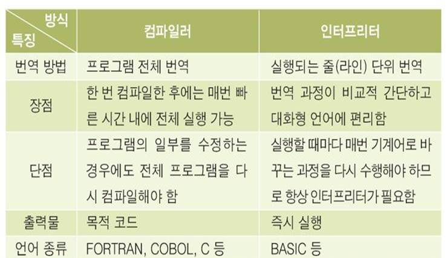

객체지향 스크립트 언어로 웹페이지의 동작을 담당
2000년대 초반까지만 해도 무시당하던 언어. 하지만 최근 몇 년 사이에 다양한 자바스크립트 프레임워크와 라이브러리가 생기면서 그 생태계는 크게 확장되었고, 위상도 높아지고 있음.
- 컴파일과정이 없어, 빠르게 코드 작성이 가능.
- 구조가 타 언어보다 단순해서 배우기 쉽다.
- 웹에 특화된 언어라 OS나 플랫폼에 상관없이 작동되고 확장성이 매우 높음
- 기능이 제한적이고, 관련된 개발도구도 적은 편이다.
- 보안에 취약하다.
노드JS와 앵귤라JS가 눈에 띄게 성장
우리가 매일 접속하는 웹사이트는 크게 3가지 요소로 구성된다. ‘HTML(Hyper Text Markup Language)’, ‘CSS(Cascading Style Sheets)’, ‘자바스크립트(Javascript)’다. HTML은 웹페이지의 큰 뼈대를 제공하고, CSS는 색깔이나 글씨체와 같은 디자인 요소를 관리한다. 자바스크립트는 크로스 플랫폼(cross platform), 객체지향 스크립트 언어로 웹페이지의 동작을 담당한다. 2000년대 초반만 해도 자바스크립트는 개발자들에게 무시당하는 언어였다. 별다른 기능도 없고, 성능도 별로 좋지 않았기 때문이다. 하지만 최근 몇 년 사이에 다양한 자바스크립트 프레임워크와 라이브러리가 생기면서 자바스크립트 생태계는 크게 확장되고 있으며, 그 위상도 점점 높아지고 있다. 자바스크립트는 다양한 장점과 단점을 가진다. 먼저 장점부터 살펴보자. 자바스크립트는 컴파일 과정이 없기 때문에 다른 언어와 비교했을 때 빠른 시간 안에 스크립트 코드를 작성할 수 있게 도와준다. 기존 C나 자바 언어와 달리 굉장히 단순한 구조와 원칙을 가지고 있기 때문에 초보 개발자들이 쉽게 배우고 이해할 수 있다. 예를 들어 자바스크립트 코드 안에서는 변수, 클래스 및 메소드를 선언하지 않아도 되고, 메소드가 ‘public’, ‘private’ 또는 ‘protected’인지 구분하지 않아도 된다. 이러한 특징은 개발자마다 서로 다른 방식으로 코드를 짜는 부작용도 있다. 그래서 구글이나 에어비앤비 같은 기업들은 ‘자바스크립트 스타일 가이드’라는 문서를 따로 만들어 읽기 쉽고 실수를 피할 수 있는 자바스크립트 작성법을 공개하기도 했다. 자바스크립트는 웹에 특화된 기술이기 때문에 운영체제나 플랫폼에 상관없이 잘 작동되고 확장성도 높다. 단점은 성능이나 보안 측면이다. 일단 내부에서 제공되는 기능이 제한적이고, 관련된 개발도구도 적은 편이다. 또한 자바스크립트는 HTML 소스코드에 함께 작성되면서 소스코드가 외부로 공개되는데, 이 과정에서 보안 취약점이 발생할 수 있다. 결과 자바스크립트는 ‘스위프트’와 함께 개발자들이 가장 많이 관심을 가지는 언어로 뽑혔다. 스택오버플로우는 설문조사 결과를 발표하면서 “자바스크립트는 가장 많이 사용하고 있는 프로그래밍 언어이며, 노드JS와 앵귤라JS가 눈에 띄게 성장

1. 내부 JavaScript<script> : 와 </script>의 사이에 위치
<script>
Document.write(“<h1>Hello world</h1>”);
</script>
2. 외부 JavaScript: .js라는 확장자로 외부 file에 저장하여 호출(이 방법 선호)
<head>
<script src=”myscript.js”></script>
</head>
3. 인라인 JavaScript : HTML 태그 내부에 이벤트 속성으로 삽입
<body>
<button type="button" onclick="alert('반갑습니다')">버튼
</button>
</body>
Onclick 이벤트가 발생하면 alert()을 호출한다.
1. document.write(출력내용, 출력내용);
내부적으로 document.open으로 시작하고 document.write로 끝나는 것이 원칙, 하지만 생략
2. console.log(출력내용);
출력내용이 화면이 아닌 브라우저 콘솔에 찍힌다.
3.window.alert(출력내용);
내용을 경고창으로 표시, window는 객체라 여기고 생략 가능
4. innerHTML += “출력내용”;
화면에 새로운 내용을 출력하거나, 새로운 내용으로 대체할 때 사용한다.
Ex) innerHTML += 변수 + “출력내용”;
1. confirm(질문내용);
팝업창에 확인을 누르면 true값을 반환, 취소를 누르면 false값 반환
2. prompt(“질문내용”);
질문내용을 경고창처럼 띄우는 방법, 하지만 UI가 투박하여 잘 사용하지 않는다.TEST때 사용.
3. getElementByID(id값)
태그의 ID 속성 값을 이용해 객체 정보를 가져온다.
4. getElementsByName(name 값)
태그의 name속성 값을 이용해 객체 정보를 배열에 담아 가져온다
5. getElementsTagName(태그명)
태그명을 이용해 객체 정보를 배열에 담아 가져온다
6. <input>태그와 value 속성 사용
- Case ‘getElementsByTagName’
Start = function(){
var li = document.getElementsByTagName(“li”);
li[2].style.backgroundColor = “Yellow”; /li3번째 요소 스타일 변경
}
.<ul>
<li>1</li>
<li>1</li>
<li>1</li>
</ul>
- Case ‘input’태그와 value속성 사용하기
<script>
var inputText = document.getElenemtsById(“username”);
var userNameValue = inputText.value;
element.value = userNameValue;
</script>
.<body>
<input type=“text” id = “userName” value=”성명입력” onclick=“this.value” />
</body>
- 주석은 코딩의 완성이다(나와 남을 위해)
- 자바스크립트의 주석
ㄱ. 한 줄 처리
//주석내용
ㄴ. 여러줄 처리
/* 로 시작하고 */로 끝난다.
- HTML에서의 주석
<!-- 로 시작하고 -->로 끝난다.
1. 변수명 = 입력값;
변수 선언 시, 앞에 var를 붙이지 않으면 전역변수로 간주한다.
2. var 변수명 = 입력값;
변수 선언 시, 앞에 var를 붙이면 지역변수로 간주한다.
EX)
<script>
function testA(){
var school = “my school”;
school2 = “my school2”;
}
testA();
console,.log(school); //에러
console,.log(school2); //에러
</script>
1. 첫 글자로 숫자가 올 수 없다.
2. 공백을 포함한 특수문자를 포함 할 수 없다.
3. 예약어를 사용할 수 없다.
4. 두 단어 이상을 연결하고 싶으면 _를 사용한다.
5. 영문 대/소문자, 숫자, _, $ 만을 사용할 수 있다.
6. 한글로 만들수도 있다.
- 연속성이 있는 데이터를 저장하고 관리하기 좋도록 메모리 공간을 할당해서 사용하는 것
- 일반적으로 변수를 선언하면 하나의 값만 저장하지만 배열은 변수 하나에 여러 값을 저장 할 수 있다
Ex) var a = ‘aaa’;
var b = ‘bbb’;
var en = [‘a’, ‘b’, ‘c’];
- 배열 안의 원소들은 임의 번호를 할당 받게 되는데 그것을 인덱스라고 부른다.(일종의 주소 값)
- 자바스크립트는 자료형의 제한이 없으므로 서로 다른 타입의 자료형의 요소들을 한 배열 안에 넣을 수 있다.
- 다양한 형태로 배열을 선언 할 수 있음.
EX) var arr1 = new Array(5); //크기 5의 배열 선언
var arr2= new Array(‘가’, ‘나’, ‘다’); // 알아서 크기 3의 배열 선언
var arr3 = new Array(); //크기가 정해지지 않은 배열 선 new Array 선언
var arr4 = [100, 200, 300, 400]; //괄호 사용 않고 바로 선언
var arr5 = document.getElementsByTagName(“li”); // li값들을 배열로 묶어 저장
- for문은 배열 때문에 생겨난 것이라 말해도 과언이 아닐 정도로 케미가 있음.
- 배열 안에 값을 입력하거나 출력 할 때, for문 사용
Ex)
입력
var arr = document.getElementsByTagName(“li”);
<li>1</li>
<li>2</li>
<li>3</li>
출력
var arr = [1,2,3];
for(var i =0; i.<arr.length; i++){
value = arr[i];
}
var arr = [‘인도’, ‘미국’, ‘대한민국’, ‘프랑스’];
Document.write(arr.indexOf(“대한민국”)); // 대한민국이 위치한 인덱스2를 반환
- 일의 단위
- Input(파라미터)하면, 규칙을 갖는 output(결과 값)이 나오도록 하는 알고리즘이 존재 하는 곳
1. function 키워드만 사용하면 된다.
Ex) function 함수명(){ } // 함수를 클래스처럼 선언 후, 객체를 생성해 사용할 때 사용.
2. 함수명을 먼저 선언하고 콜백하는 형태
Ex) 함수명 = function(){ } // 클래스와 멤버 함수를 구분하기 위한 형태
3. 호출 없이 스스로 동작하는 함수의 선언
Ex) (function(){})();
- 선언된 함수는 호출해야만 기능이 구동되기에, 함수를 만들 때, 미리 호출하는 부분을 만들어 두는 것도 요령이다.
1. 점 표기법 :
var lalap = new Object();
lalap.kind = 'worm';
lalap.getKind = function() {return 'Kind = ' + lalap.kind;};
2. 각 괄호법 :
var lalap = new Object();
lalap['kind'] = 'worm';
lalap['getKind'] = function() { return 'Kind = ' + lalap.kind;};
주로 점 표기법을 쓰긴 하지만,
각괄호 표기법은 속성 이름 문자열을 저장하고 있는 변수를 사용해 속성키에 접근해야 할 때 편리.
- 자바스크립트는 웹브라우저에서 사용자로부터 발생되는 여러 이벤트를 모두 잡아내기 위해 매우 다양한 이벤트를 처리하는 핸들러가 있다.
1. HTML에 inline으로 등록
<div onclick="alert('clicked!');">Click me!</div>
2. element의 onload 속성을 통한 등록
<div id="domId">Click me!</div>
<script> var element = document.getElementById("domId");
element.onclick = function () { alert("clicked!"); }
</script>
3. addEventListener/attachEvent를 이용한 등록
<div id="domId">Click me!</div>
<script> var element = document.getElementById("domId");
element.addEventListener("click", function () { alert("clicked!"); }, false);
</script>
MVC 또는 MVVM 모델을 분류하기 위하여 html은 오로지 document를 표시해주는 역할을 취하게 하기 위해서는 1)번 보다는 이벤트 핸들러는 자바스크립트로 설정하는 2)번과 3)번 방법이 최근에 웹 개발자들 사이에서 자주 사용하는 방법
하지만 위의 2)번과 3)번 두 가지는 기능상으로는 차이를 못느끼겠지만, 3)번 방법은 익스플로러가 IE10 이전 버전에서는 addEventListener를 지원하지 않고 독자적인 attachEvent를 활용하기 때문에 크로스 브라우져를 고민해야하는 문제점이 있고, 2)번 방법은 DOMElement.onload 등으로 하면 바로 크로스브라우져를 지원하는 이벤트 리스너를 등록할 수 있다. 하지만 최근에 들어서는 일반적으로는 2)번 방법보다는 좀 불편한 3)번 방법을 더 선호하고 있다. 왜일까.
편하기로는 onload를 그냥 쓰는 것이 편하기는 하지만 리스너 등록을 하도록 되어가는 것의 이유는 자바스크립트의 역할이 많아지면서 다양한 라이브러리들이 나오고 그것들을 활용할 때 충돌이 일어나지 않게 하기 위함이 제일 크다. 초창기 베이직이나 C에서 글로벌 활용이 대중적이었다가 점점 encapsulation이 중요해진듯 자바스크립트도 그 과정을 거치고 있다고 생각하고 있고, 이처럼 된 것은 웹 페이지들이 복잡해져서 이제는 웹어플리케이션이라는 단어까지 나올 정도가 되었으니 웹페이지가 복잡하다면(또는 단순하다면) 그에 맞는 방법을 사용해야하는게 좋지 않을까 생각한다.
빠른 개발, 단순한 기능, 보안상 중요하지 않은 기능, 라이브러리를 이용 안한다면 inline 또는 onload와 같이 속성을 통해 직접 이벤트 등록복잡한 기능, 안전하고 보안이 필요한 기능, 다수의 라이브러리를 활용하는 페이지 또는 라이브러리를 개발하고자 한다면 addEventListener 또는 attachEvent 함수를 활용하지만 정식 스펙인 addEventListener를 사용하는 것을 습관화 들이면 좋을 것이다.
1. 비동기식
- Ajax는 어떠한 종류의 ActiveX나 플러그인 프로그램을 설치하지 않음
- Ajax를 사용하면 사용자에게 즉각적인 반응과 풍부한 UI경험을 제공할 수 있음
- 화면이 깜빡이지 않음. 화면이 깜빡이지 않는 다는 말은 기존화면에 뿌려진 객체요소(이미지, 텍스트 등)은 그대로 사용하면서
필요한 데이터만 가져다 쓸 수 있다는 의미
2. 크로스브라우징
- 크로스 브라우징이란 html, css, 그리고 javascript 작성시 W3C 의 web standard (웹규격) 에 맞는 코딩을 함으로써
어느 브라우져에서나 기기에서 사이트가 제대로 보여지고 작동되도록 하는 기법(사실상 웹의 표준은 없음)
- ‘Can I Use’ 를 사용하면 브라우저 별로 작동되는 CSS와 JS를 알려줌
- 브라우져 트랜드를 간파(각 브라우져들의 기능 평가도를 보면 현재 크롬과 오페라가 가장 높음, 파폭과 사파리는 익스보다 여전히 낮은 상태이나
우리나라는 사용자가 많기에 까다로운 존재가 됨)
- 크롬이나 파폭, 오페라 처럼 항상 최신버전 하나만 사용되는게 아니라, 여러버전이 존재
3. JS의 방향성
- 앵귤러js
- 노드js